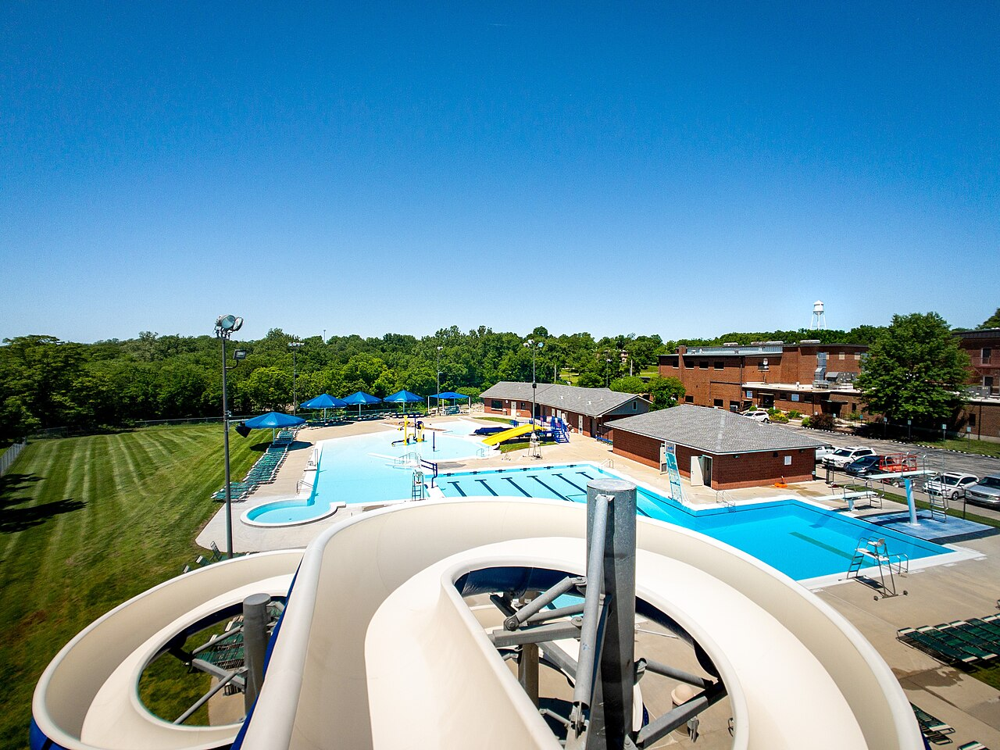

💧 欧悦水上乐园（苏州吴江）
方案③玩水地 · 紧邻苏州湾亚朵
室内恒温紧邻亚朵全年可玩

实景照片 · 来源 Wikimedia Commons（CC协议）
← 返回主计划
位置与交通
- 位置：苏州市吴江区东太湖度假区（紧邻苏州湾亚朵）
- 距苏州湾亚朵：紧邻，步行即达（满足"玩水1km内"）
价格参考
| 票种 | 预估 | 说明 |
|---|
| 2大1小 | 约300–500元 | 可玩多次，见主计划预算 |
| 儿童(1.2–1.5m) | 约半价 | 女童适用，以售票为准 |
特点与适合谁
- 室内恒温，全年可玩，不受10月降温影响。
- 紧邻酒店，零通勤，女童天天可去。
- 规模小于绍兴东方山水水之王国，戏水爽感略逊。
注意事项
若选苏州湾方案，玩水以「欧悦+苏御温泉」为主；苏州湾梦幻水世界为季节性，10月可能闭园，需提前确认。